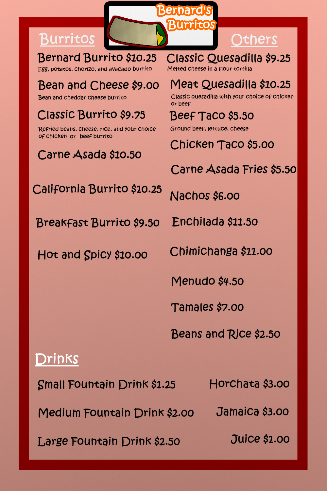

Everyone wants to know what all of these Bernard Burritos are made out
of. That's why this page is here! To tell you exactly what you’re getting
with your meal! You can upgrade your meal to come with a fountain drink
and a side of beans or rice for just $1.50 extra.
The wheat used to make our famous flour tortillas are grown fresh in
local farms in the area. The wheat is then turned into flour by our good
neighbor, WheatGrinding Co*. They are a very trusted company that helps
make our food possible.
Our vegetables are also locally grown, with no pesticides or extra
hormones. These healthy greens were grown from generation to generation
on a family farm. They made sure only the best, quality produce made it
to people's plates, and used those seeds to get a better harvest every
year. The vegetables go straight from that farm, to your plate in a
burrito!
Everything from our veggies, to our cheese is very fresh! Our animal
products are used from the best free-range farms that treat every animal
with care. Our cows are put in a calm, grassy area so that the steaks
and cheeses taste the very best, with no extra hormones from stress. We
need to make sure we feed our animals the best food, so we can feed you
the best food.
Don't think we forgot about your kids! We have special kid’s meals that
are smaller versions of the main meals, but they come with a delicious
juice, a small side of fries, and even a crayon pack to color with! We
guarantee that your kids will want to come back! Even if they’re a picky
eater, we also have some chicken tenders, burgers, and even mac and
cheese. We even have a solution for when your kids are with you at a
fancy dinner. While you eat the kids can go play in our mini playground
and have lots of fun!
Make sure to grab a complimentary burrito on your birthday!

Now that you see exactly what is in our food, why don't you come on down
and give us a visit. We are good for any occasion. And make sure to tell
all your friends about our business. We really appreciate all your
support.